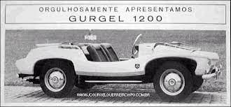
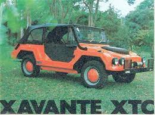
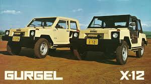
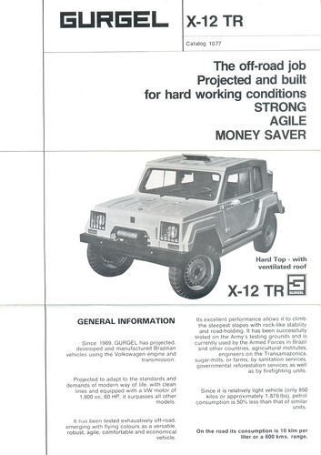
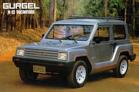

Gurgel
Gurgel Motores S/A foi uma fabricante de automóveis brasileira, desenvolvidos pelo engenheiro João Augusto Conrado do Amaral Gurgel. Com a proposta de produzir veículos 100% nacionais, o empresário montou em 1969, na Avenida do Cursino, em São Paulo a fábrica de carros que levava o seu nome (mudou sua sede para Rio Claro, em 1975). A montadora produziu aproximadamente 30 mil veículos genuinamente brasileiros durante seus 27 anos de existência.
O registro da marca Gurgel encontrava-se expirado no INPI desde 2003. Em 2004, o empresário Paulo Emílio Freire Lemos, pelo valor de R$ 850,00, registrou para si a marca Gurgel e o antigo logo. A família Gurgel não foi consultada e por isso decidiu mover uma ação judicial contra o empresário.
História
Década de 1960
A Gurgel foi fundada em 1 de setembro de 1969 pelo falecido engenheiro mecânico e eletricista João Augusto Conrado do Amaral Gurgel, que sempre sonhava com o carro genuinamente brasileiro. Gurgel começou produzindo karts e minicarros para crianças no começo dos anos 60, quando tinha uma empresa de luminosos. O primeiro modelo de carro foi o bugue Ipanema e utilizava, motor Volkswagen.
Buggy Ipanema 1200 1968
Década de 1970
A marca viu que o Ipanema era usado em terrenos hostis e isso apontou o rumo que a empresa deveria seguir. Nisso, surgia o Xavante XT de 1972, já com chassi plasteel e suspensão desenvolvida por João Gurgel, que foi o primeiro carro da fábrica testado pelas Forças Armadas, vindo depois o Xavante XTC de 1974, um jipe maior e mais quadrado, no mesmo ano de lançamento do Xavante X-12 (que mais tarde seria apenas X-12).

Gurgel X-12 1972 Militar modelo adquirido pelo exército brasileiro
Gurgel Xavante XT 1974
Logo, o Xavante X-12 iniciava o relativo sucesso da marca. Este foi o principal produto durante toda a evolução e a existência da fábrica. Este jipe seguia a tendência dos bugues de sua época e tinha como características diferenciais um chassi feito de plasteel (projeto patenteado pela Gurgel desde o início de sua aplicação, que era uma união de plástico e aço, que aliava alta resistência a torção e difícil deformação), uma carroceria de plástico reforçado com fibra-de-vidro (PRF)e o selectraction O Xavante logo agradou ao público, por sair da concepção tradicional dos bugres, e ao Exército brasileiro, que fez grande encomenda - havia uma versão militar especialmente produzida para este fim, o que deu impulso à produção. O modelo X-12, era uma versão civil do jipe das forças armadas.
Gurgel X-10 1977
Gurgel X-12 1978
Cumpre lembrar, que o sucesso dos veículos e da marca se deu ao fato de não haver no mercado concorrência à altura, pois o Brasil tinha restrição à importação de veículos automotores. No mercado existiam o Toyota Bandeirante (versão brasileira do Land Cruiser com motor diesel Mercedes) e o Jeep Willys (posteriormente Ford). Estes veículos eram equipados com tração 4x4 e tinham desempenho bastante superior ao Gurgel em uso fora de estrada (que só era apresentado com tração traseira), porém eram muito caros e apresentavam alto custo de manutenção e consumo.
Em busca de maior espaço físico para a produção de seus veículos, a empresa compra um terreno em Rio Claro, em julho de 1973. A inauguração da fábrica foi em maio de 1975, com a produção começando simultaneamente. No mesmo tempo em que a fábrica era construída, a Gurgel apresentava o Itaipu E150, um projeto pioneiro de carro elétrico.
Em 1976 chegava o Xavante X12 TR, de teto rígido, com o chassi Plasteel e uma garantia inédita de fábrica de 100.000 quilômetros.
veículos especiais e o segundo em produção e faturamento. Cerca de 25% da produção seguia para fora do Brasil. Eram fabricados 10 carros por dia, sendo o X12 o principal produto da linha de montagem. A unidade de negócios era o Gurgel Trade Center, numa importante avenida da capital paulista. Havia um escritório executivo e um grande salão de exposição, além de um centro de apoio técnico aos revendedores.
Em 1979, toda a linha de produtos foi exposta no Salão do Automóvel de Genebra, onde o jipe brasileiro teve boa recepção. Ainda naquele ano foi lançado o furgão X15 e o X20.
Furgão Gurgel X-15
Furgão Gurgel X-20
O Exército Brasileiro era seu principal cliente, que comprava principalmente o X12 e X15. Algumas unidades do X20 também foram vendidas.

Gurgel X-15, X-20
Década de 1980
Em 24 de junho de 1980 a Gurgel lançava sua pedra fundamental da fábrica de veículos elétricos (um novo prédio na mesma fábrica de Rio Claro). O projeto desses veículos iniciou-se com o TU (apenas um veículo de demonstração, sem motor). A seguir, a marca lançava (em 1981), de fato, um veículo elétrico em série: o Itaipu E150. Logo depois aparecia o monovolume E400, que fora vendido para companhias estatais. Entretanto, os modelos não vingaram por terem alto custo das baterias e autonomia pequena; logo a Gurgel descontinuaria a produção de seus veículos elétricos.

Projeto carro elétrico Gurgel Itaipu E400
Os cerca de 4 mil carros exportados para os mais de 40 países fizeram a empresa se tornar multinacional. Mas João Gurgel adorava dizer que sua marca não era multinacional, e sim "muitonacional", pois o capital era 100% brasileiro.
A valente empresa crescia. Sua fábrica, de 360 mil m³ e 15 mil de área construída, tinha 272 empregados, entre técnicos e engenheiros. Todos dispunham de assistência médica e transporte. Só perdia em número de funcionários para a Puma Automóveis, no que se referia a pequenos fabricantes
Em 1980 a linha era composta de 10 modelos. Todos podiam ser fornecidos com motores a gasolina ou álcool, apesar de mais tarde o engenheiro Gurgel combater muito o combustível vegetal.
Ainda naquele ano, foi testado - depois de cinco anos de estudos - mais um veículo de tração elétrica, o Itaipu E400. Este furgão foi vendido em 1981 apenas para empresas, que se comprometiam a reportar os problemas e dificuldades encontrados. Depois da versão furgão, seriam lançados modelos picape, de cabines simples ou dupla, e em 1983 o Itaipu E400, para passageiros. Entretanto, as baterias, que demoravam até 10 horas para serem carregadas, e com peso elevado, não permitiram uma autonomia satisfatória. Mais tarde, com a mesma carroceria, foi lançado um modelo com motor Volkswagem "a ar", denominado G800 em 1982.
Em 1984, a Gurgel lançava seu maior carro durante toda a sua história: o jipe Carajás, que foi o primeiro com motor dianteiro. E ainda oferecia o TTS, sigla para Tork Tube System, que levava a força do motor/embreagem (dianteiros) à sua caixa de marchas (traseira). Contudo, o TTS apresentava alguns pontos negativos, como a demora do acionamento da embreagem (devido à grande inércia do eixo) forçando o motorista a trocar as marchas com um intervalo de tempo maior entre o desengate e o engate, principalmente entre a 2º e a 3º marcha.
Jipe Carajás 1984
Outros modelos novos foram: o X12 TR (versão mais barata do X12 com teto rígido), X12 RM (com várias configurações), o X12 M (este de uso exclusivo das Forças Armadas do Brasil), o X15 TR, o G15 L e o XEF, primeiro minicarro da marca.
Em 1988, como modelo 1989, o X12 passou a se chamar Tocantins, acompanhado de ligeira reforma estética e na suspensão.
Gurgel X-12 TR, X-12 RM
Folder em inglês Gurgel X-12 TR, voltado para mercado americano.
Além dos utilitários, Gurgel sonhava com um carro econômico, barato e 100% brasileiro para os centros urbanos. Em 7 de setembro de 1987 foi apresentado o protótipo 280M, resultado do projeto CENA, acrônimo de "Carro Econômico Nacional", um minicarro projetado para ser o mais barato do país. Os motores eram de dois cilindros horizontais opostos, 650 ou 800 cm³, refrigerados a água, como em certos carros japoneses.
A potência seria de 26 ou 32 cv conforme a versão. Do protótipo se chegou ao BR-800, nomenclatura alterada devido sonoridade de CENA com o nome do piloto Ayrton Senna, sendo lançado oficialmente em 1988. O objetivo de projetar um carro com o preço final de US$ 3 mil não se concretizou, mas graças a um incentivo fiscal do governo brasileiro (que concedeu ao veículo o direito de pagar apenas 5% de (IPI), enquanto os demais carros pagavam 25% ou mais dependendo da cilindrada), o carro era vendido a um preço médio de US$ 7 mil - cerca de 30% mais barato que os compactos das montadoras transnacionais no Brasil.
De início, a única forma de compra era a aquisição de ações da Gurgel Motores S/A, que teve a adesão de 8 000 pessoas Sob a campanha,foram vendidos 10.000 lotes de ações. Cada comprador pagou os 7 000 dólares pelo carro e cerca de 1 500 dólares pelas ações, o que se constituiu um bom negócio para muitos - no final de 1989 havia ágio de 100% pelas mais de 1.000 unidades já produzidas. Em 1991, a Gurgel tinha uma frota de testes de 5.000 BR-800 nas mãos de seus sócios. Esse volume representava até então a maior frota de testes do mundo. Os nomes dos carros representavam aspectos da cultura brasileira, como Xavante, Ipanema, Itaipu, Carajás, Tocantins.
Gurgel Tocantins
Década de 1990
A década de 1990 se mostrava promissora para a Gurgel, e por isso ela lançava o Motomachine. Inicialmente, apenas os acionistas podiam comprar o carro. E neste mesmo ano, o BR-800 passaria a ser vendido sem o pacote compulsório das ações da empresa: qualquer um podia comprar o veículo.
Gurgel BR-800
O novo governo do Brasil, do presidente Fernando Collor de Melo, tomou medidas que prejudicaram a Gurgel. A primeira delas foi isentar todos os carros com motor menor que 1000 cm³ do IPI - o que levou as grandes montadoras estrangeiras instaladas no país a lançar quase que instantaneamente carros com preços menores que os do BR-800 e com mais recursos. Um bom exemplo disso é o Uno Mille. Outra medida do governo Collor foi liberar as importações de veículos. Mesmo pagando aliquota de 85%, o Lada Niva era mais barato que os jipes produzidos pela Gurgel. Em 1991, os bancos estatais Banespa e BEC concederam novos empréstimos (sem garantias) à Gurgel. Nesse momento, as pressões sobre a empresa só aumentavam. Se antes desse passo a única fábrica totalmente nacional de automóveis ainda não incomodava, restrita que era a uma vitoriosa linha de jipes e utilitários, linha essa acrescida de um carro urbano e econômico ainda sem economia de escala e portanto sem preços competitivos, agora ela ameaçava crescer e aparecer.
Em 1992, tentando reagir no mercado, a marca lançava o Supermini, com um desenho e acabamento mais equilibrados que o seu antecessor, BR-800. Mesmo depois de 4 anos do lançamento do lote de ações da Gurgel, alguns acionistas que não receberam o BR-800 estavam recebendo o Supermini, como forma de compensar o atraso na entrega do primeiro.
Gurgel Supermini
Pensando mais à frente, o engenheiro Gurgel decidiu fazer um novo projeto, batizado de Delta, que seria um novo carro popular de baixo custo que usaria o mesmo motor Enertron e custaria entre 4000 dólares e 6000 dólares, mas não chegou a ser fabricado em série (apenas pouquíssimos protótipos foram fabricados). A Gurgel chegou a adquirir algumas das máquinas-ferramenta que acabaram não sendo usadas. Ciro Gomes, na época, governador do Ceará e o Sr. Luiz Antônio Fleury Filho, governador de São Paulo, não honraram um compromisso de "apoio irrestrito" (ou protocolo de intenções) ao Projeto Delta. Tal projeto consistia na instalação de uma fábrica em Fortaleza para a produção da parte motriz dos veículos, que atuaria em conjunto com a unidade de Rio Claro, responsável pela produção das carrocerias.
Concordata e falência
A empresa havia batido seu recorde de vendas, quando comercializou 3.746 carros em 1991, mas caiu para 1.671 em 1992 devido a greve de funcionários da alfândega brasileira em 1991, que impediu a chegada de componentes da Argentina. A quebra no ritmo de produção quebrou o fluxo de caixa da empresa e as dívidas se acumularam. A produção do X12 (único utilitário remanescente desde a abertura das importações no Brasil) foi reduzida drasticamente por conta de abalo da relação entre Volkswagen e Gurgel em razão da concorrência com o Volkswagen modelo 181, similar ao X12, que saiu de linha porque o segundo vendia tão bem que roubou espaço do primeiro. A marca também priorizou a fabricação dos seus carros populares (BR-800 e Supermini).
Portanto, sem apoio do governo, a Gurgel pediu concordata em junho de 1993. Em uma última tentativa de salvar a fábrica, em 1994, foi feito um pedido ao governo federal para um financiamento de 20 milhões de dólares à empresa, mas este foi negado, e a fábrica foi declarada falida em 1994.
Em meio à declaração de falida pelo governo, a empresa conseguiu recorrer da decisão de decretação de falência e ficou ativa até setembro de 1996. Seus últimos projetos foram: Supermini 1995 - uma versão com traseira mais reta que o Supermini anterior e seria lançado nesse mesmo ano; Motomachine - um minicarro urbano pensado como meio de transporte; as últimas versões de Tocantins (que perdurou de 1992 a 1995) - com uma ligeira mudança na grade dianteira e Carajás (sem nenhuma mudança relevante) e o Motofour - de conceito similar ao Motomachine - que teve um único exemplar fabricado. Durante esse período, a marca ainda produziu mais 130 veículos.
Desde o fim da empresa, a fábrica de Rio Claro ficou nas mãos de um escritório em São Paulo. E desde 2001 a justiça vinha tentando vender a fábrica, que enfrentava muitos furtos de peças dos carros ainda inacabados: pelo menos 30 boletins de ocorrência foram feitos.
Após diversas tentativas de venda do terreno da fábrica e seus veículos abandonados, ela só foi leiloada em 2007, por quase R$16 milhões. O dinheiro serviu como pagamento de dívidas trabalhistas, que chegou a quase R$20 milhões. A Gurgel deixou um lastro de R$280 milhões em dívidas.
O registro da marca Gurgel encontrava-se expirado no INPI desde 2003. Em 2004, o empresário Paulo Emílio Freire Lemos adquiriu a marca pelo valor de R$850,00. A família Gurgel não foi consultada e por isso decidiu mover uma ação judicial contra o empresário.A atual Gurgel nada tem a ver com a Gurgel Motores S/A, sendo apenas o uso da mesma marca, portanto não devendo ser confundido.
Além disso, ela arrematou 6 carrocerias (BR-800, Carajás, Itaipu, Supermini, X12 e X15) que estavam na antiga fábrica, como um projeto para os futuros relançamentos. A empresa pretende relançar o Tocantins (que existe num protótipo), apesar de o projeto estar paralisado desde 2007.